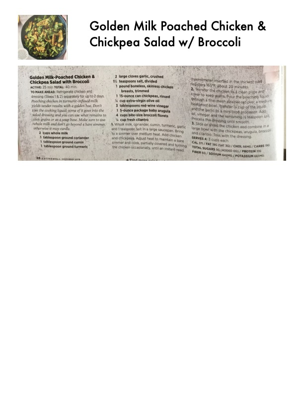

Golden Milk-Poached Chicken & Chickpea Salad with Broccoli

Original cookbook page 49
Refrigerate chicken and dressing (Steps 1 & 2) separately for up to 2 days. Poaching chicken in turmeric-infused milk yields tender results with a golden hue. Don't toss the cooking liquid; some of it goes into the salad dressing and you can use what remains to cook grains or as a soup base. Make sure to use whole milk and don't go beyond a bare simmer; otherwise it may curdle.
Prep: 25 minutes • Cook: 15 minutes • Total: 40 minutes
Ingredients
- 2 cups whole milk
- 1 tablespoon ground coriander
- 1 tablespoon ground cumin
- 1 tablespoon ground turmeric
- 2 large cloves garlic, crushed
- 1½ teaspoons salt, divided
- 1 pound boneless, skinless chicken breasts, trimmed
- 1 15-ounce can chickpeas, rinsed
- ⅓ cup extra-virgin olive oil
- 3 tablespoons red-wine vinegar
- 1 5-ounce package baby arugula
- 4 cups bite-size broccoli florets
- ½ cup fresh cilantro
Instructions
- Whisk milk, coriander, cumin, turmeric, garlic and 1 teaspoon salt in a large saucepan. Bring to a simmer over medium heat. Add chicken and chickpeas. Adjust heat to maintain a bare simmer and cook, partially covered and turning the chicken occasionally, until an instant-read thermometer inserted in the thickest part registers 165°F, about 20 minutes.
- Transfer the chicken to a clean plate and cover to keep warm. Pour the poaching liquid through a fine-mesh strainer set over a medium heatproof bowl. Transfer ¼ cup of the liquid and the garlic to a mini food processor. Add oil, vinegar and the remaining ½ teaspoon salt. Process the dressing until smooth.
- Slice or shred the chicken and combine in a large bowl with the chickpeas, arugula, broccoli and cilantro. Toss with the dressing.
Recipe #49 from collection